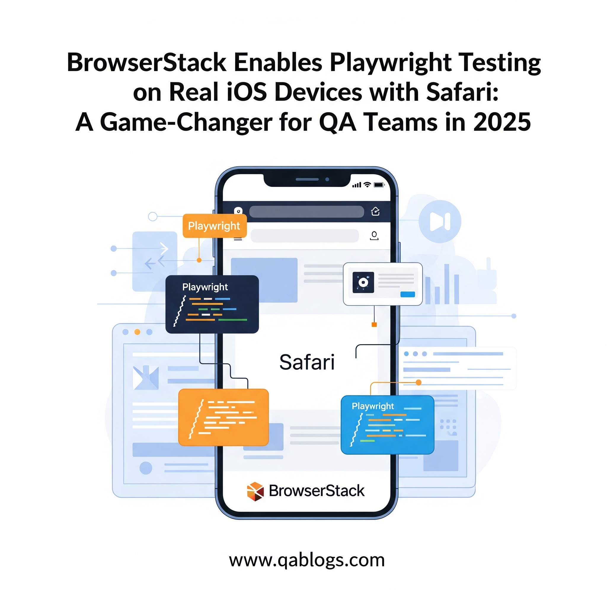

BrowserStack Enables Playwright Testing on Real iOS Devices with Safari: A Game-Changer for QA Teams in 2025

On June 12, 2025, BrowserStack made headlines by becoming the first platform to enable Playwright testing on real iOS devices with Safari, a breakthrough that addresses a long-standing gap in cross-browser automation. This development is a game-changer for QA teams and developers striving to deliver flawless mobile web experiences in 2025. This blog on QA Blogs explores the significance of this update, its impact on QA workflows, and actionable steps for teams to leverage this new capability—all optimized for SEO to reach QA professionals and tech enthusiasts.
The Big News: BrowserStack's Industry-First Update
BrowserStack, a leading software testing platform, announced support for Playwright tests on real iOS devices using Safari, marking a significant milestone in test automation. Playwright, a popular cross-browser automation framework by Microsoft, has been widely adopted for its ability to test across Chromium, Firefox, and WebKit browsers. However, until now, QA teams couldn't run Playwright tests on real iOS devices with Safari, relying instead on desktop browser emulation or simulators. This limitation often led to missed iOS-specific bugs, false positives, and incomplete test coverage.
BrowserStack Automate now allows teams to run Playwright tests on real iPhones and iPads with Safari, offering a solution that ensures accurate, real-world testing. This update, highlighted in a PR Newswire release on June 12, 2025, positions BrowserStack as a pioneer in addressing one of the most persistent challenges in mobile web testing.
Why This Update Matters for QA Teams
This breakthrough is critical for several reasons, especially in the context of 2025's fast-evolving QA landscape:
1. iOS's Significant Market Share
With iOS driving 28% of global web traffic in 2025, as noted by Nakul Aggarwal, CTO and Co-founder of BrowserStack, ensuring compatibility with Safari on iOS devices is non-negotiable. Users on iPhones and iPads expect seamless experiences, and even minor issues—like a misaligned UI or a broken feature—can lead to lost revenue and damaged trust. Testing on real iOS devices with Safari ensures that QA teams can catch these issues before they reach production, directly impacting user satisfaction and retention.
2. Limitations of Emulation and Simulators
Prior to this update, QA teams using Playwright had to rely on desktop browser emulation or iOS simulators to test Safari. However, emulation often misses device-specific issues, such as rendering differences, touch interactions, or performance under real-world conditions (e.g., network latency, device orientation). Simulators, while useful, don't fully replicate the hardware and software nuances of real devices, leading to unreliable results. BrowserStack's support for real iOS devices eliminates these gaps, providing a more accurate testing environment.
3. Faster Debugging and Improved Quality
BrowserStack Automate offers comprehensive debugging capabilities alongside real-device testing. Teams can capture network, video, and text logs in one place, making it easier to pinpoint and resolve issues. This streamlined debugging process reduces the time spent on troubleshooting, allowing teams to focus on improving quality. For instance, L'Oréal's Global Technical Delivery Manager, Darius Dumitrescu, reported saving up to 80% of quality automation costs by testing on more devices and browsers with BrowserStack, as mentioned in the June 2025 announcement.
4. Alignment with 2025 QA Trends
This update aligns with several trends shaping QA in 2025, as seen in recent QA Blogs posts:
- Shift-Left Testing: As discussed in "Shift-Left Testing: Embedding Test Cases Early in the SDLC," testing early in the development cycle is critical. Real-device testing with Playwright enables QA teams to catch Safari-specific bugs during development, improving quality from the start.
- Automation for Speed and Quality: TestRail's 2025 Report highlighted automation as a top priority for 43% of QA teams. BrowserStack's update supports this by enabling automated Playwright tests on real iOS devices, speeding up release cycles while ensuring quality.
- Accessibility Compliance: From "Navigating the European Accessibility Act," ensuring accessibility on all devices, including iOS, is a legal requirement in 2025. Real-device testing ensures compliance with standards like WCAG 2.2 on Safari.
Key Features of BrowserStack's Playwright Testing on Real iOS Devices
BrowserStack Automate's new capability offers several features that empower QA teams:
- Parallel Testing Across 1000+ Devices: Run Playwright tests on over 1000 real iOS and Android device-browser combinations simultaneously, reducing test execution time and scaling coverage.
- Accurate, Reliable Results: Testing on real iPhones and iPads eliminates emulator gaps, ensuring results reflect actual user experiences on Safari.
- Comprehensive Debugging: Access network logs, videos, and text logs in one dashboard for faster issue resolution.
- Real-World Conditions Simulation: Simulate scenarios like location, network speed, timezone, and device orientation to test under realistic conditions.
- Stable CI Pipelines: Reduce false positives and maintain consistent test outcomes, even as test suites grow, ensuring reliable CI/CD integration.
How QA Teams Can Leverage This Update: A Step-by-Step Guide
To take advantage of BrowserStack's Playwright testing on real iOS devices with Safari, QA teams can follow these steps:
1. Set Up Your BrowserStack Account
What to Do: Sign up for a BrowserStack account if you don't already have one. BrowserStack offers a free trial with 100 minutes of automated browser testing, as noted in their documentation.
Tip: Ensure you have your BrowserStack username and access key, available in your account settings, for integration.
2. Configure Playwright for BrowserStack
What to Do: Update your Playwright test scripts to connect to BrowserStack's real-device cloud. Modify your browserstack.yml configuration file to specify iOS devices and Safari.
Example Configuration:
platforms:
- deviceName: iPhone 14
browserName: safari
osVersion: 18.1Tool: Use the BrowserStack SDK for NodeJS, as Playwright testing on real iOS devices is supported with NodeJS.
3. Write and Run Playwright Tests
What to Do: Write Playwright test scripts targeting Safari-specific scenarios, such as touch interactions or responsive design on iOS.
Example Test Case: Input: Navigate a checkout flow on an e-commerce site; Expected Output: All buttons are tappable, and the flow completes without errors on Safari for iPhone 14.
Command: Run tests using BrowserStack Automate by triggering them from your local machine or CI/CD pipeline (e.g., Jenkins, GitHub Actions).
4. Debug and Analyze Results
What to Do: Use BrowserStack's Automate dashboard to view test results, including video recordings, network logs, and screenshots. Debug issues like rendering glitches or performance delays specific to Safari on iOS.
Tip: Focus on real-world conditions—test with simulated network speeds or device orientations to catch edge cases.
5. Integrate with CI/CD for Continuous Testing
What to Do: Automate Playwright tests on real iOS devices within your CI/CD pipeline to ensure continuous validation with every commit.
Tool: Integrate with Jenkins or GitHub Actions, as BrowserStack supports seamless CI/CD workflows.
6. Scale Testing for Broader Coverage
What to Do: Leverage BrowserStack's parallel testing to run tests across multiple iOS devices (e.g., iPhone 14, iPad Pro) and versions (e.g., iOS 18.1, 18.2) simultaneously.
Benefit: Achieve comprehensive coverage without slowing down release cycles, aligning with TestRail's 2025 findings on automation for speed.
Real-World Impact for QA Teams
This update is already proving transformative for QA teams in 2025:
- E-commerce: An online retailer can now test its mobile checkout flow on real iOS devices with Safari, ensuring accessibility and functionality for European users under the EAA, as discussed in "Navigating the European Accessibility Act."
- Financial Services: A banking app can validate its payment gateway on Safari for iPhone, catching iOS-specific bugs early, as highlighted in "Designing Effective Test Cases for Privacy-First Financial APIs."
- Global Brands: L'Oréal, as cited in the BrowserStack announcement, has doubled its device and browser coverage, tripling website sampling from releases, demonstrating the scalability of real-device testing.
Challenges and Considerations
While this update is a leap forward, QA teams should be aware of potential challenges:
- Learning Curve: Teams new to Playwright or BrowserStack may need time to configure and optimize tests for real iOS devices. Training on Playwright and BrowserStack's SDK is essential.
- Cost: Real-device testing on BrowserStack requires a subscription, though the free trial offers a starting point. Teams must weigh the cost against the benefits of improved quality.
- Dependency on Cloud Infrastructure: Relying on BrowserStack's cloud means teams need a stable internet connection and may face occasional latency, though BrowserStack's 19 global data centers mitigate this.
Conclusion
BrowserStack's June 2025 update enabling Playwright testing on real iOS devices with Safari is a landmark achievement for QA teams. By closing a critical gap in mobile web testing, this capability ensures accurate, real-world results for the 28% of global web traffic on iOS, driving better quality and faster release cycles. QA teams can now catch Safari-specific bugs early, debug efficiently, and scale testing across 1000+ devices, aligning with 2025's focus on automation, shift-left practices, and accessibility. Start by setting up BrowserStack Automate, configuring your Playwright tests, and integrating with CI/CD to experience the difference real-device testing makes.
Ready to test on real iOS devices with Safari? Share your Playwright testing tips in the comments, and explore more QA strategies on QA Blogs!
Join Our Community of QA Professionals
Get exclusive access to in-depth articles, testing strategies, and industry insights. Stay ahead of the curve with our expert-curated content delivered straight to your inbox.
Nikunj Mistri
Founder, QA Blogs
About the Author